{kind=link}
{kind=link}
{kind=link}

The Virtual AGC Project was not involved in the
AGC-restoration project described herein. But one of our
core developers did participate, and there is a certain synergy
between the restoration effort and the Virtual AGC Project, so I
think it is reasonable to give some information about the
restoration effort here. If you see something bogus here,
blame me and not the restorers!
As for this specific webpage, it is under construction and is
still somewhat incomplete at the moment. My intention is not
to provide an up-to-the-minute accounting of the progress of the
restoration, which I'm not capable of doing anyway, and so it will
stay incomplete until the restoration has been completed ... which
hasn't entirely happened yet.
Unless otherwise stated, all photographs are by Mike Stewart.
"The Restoration" is an attempt to power up and run one of the
original Apollo Guidance Computers. I'm told (in 2019) that
there is presently no other AGC in operation in the world.
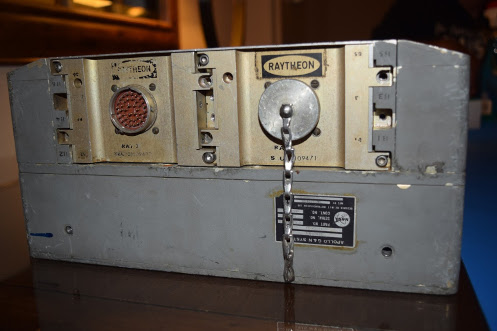 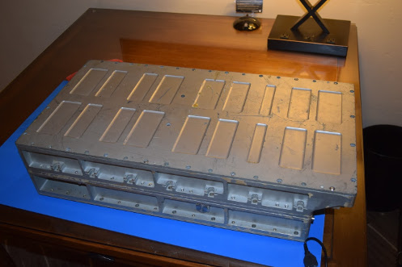 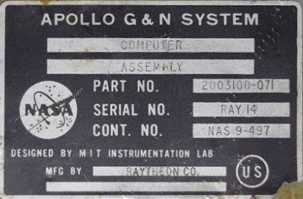
Specifically, this is an attempt to operate one particular Block II AGC:
Part number: 2003100-071
Serial number: (Raytheon) 14
Owner: Jimmie Loocke
To my recollection I've never had any personal contact with
Jimmie, but according to online information he worked in Project
Apollo as a thermal vacuum test technician for LTA-8 (Lunar Test
Article), among other things. LTA-8 was a LEM used only for
testing and qualification purposes. He was thus in a good
position years later to recognize the AGC when he saw it in a
warehouse of junk that was intended to be scrapped for recycling
purposes. After rescuing the AGC from its fate, the idea was
eventually conceived of actually restoring it and operating it.
| 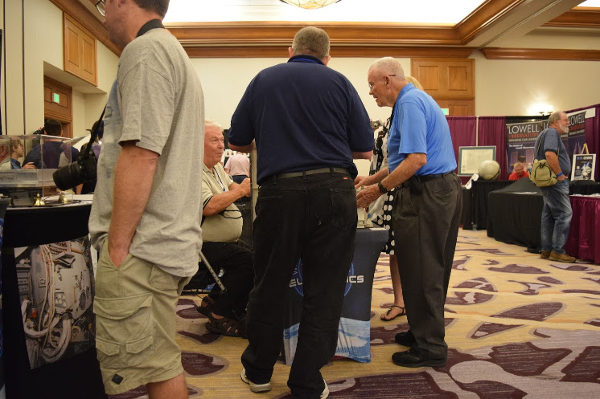 Jimmie Loocke (seated) and Fred Haise
(light blue shirt) at SpaceFest IX.
|
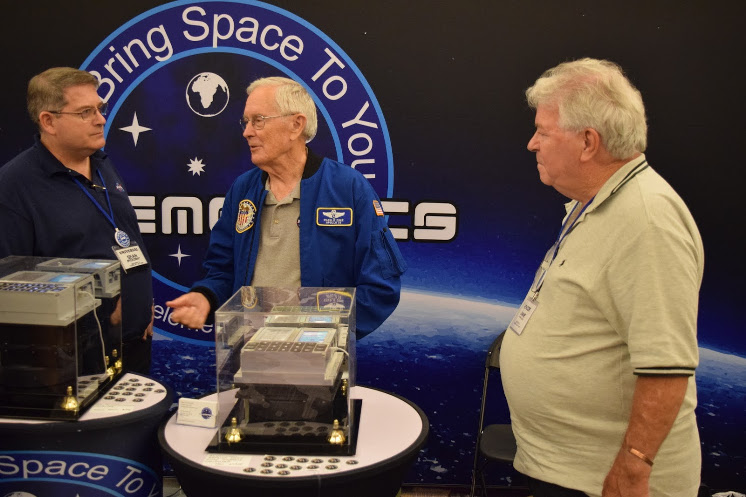 Charlie Duke (center) and Jimmie
Loocke (right) at SpaceFest IX.
|
While this AGC never flew a mission, the restoration team
believes it was indeed used in the vacuum testing of LTA-8.
This seems like a reasonable hypothesis since LTA-8's G&N
(Guidance & Navigation) system, #602, did use an AGC p/n
2003100-071. Moreover, we have no record of that AGC model
having been used for any other purpose. In fact, the team has even
been able to come up with some photographic evidence of this
notion. Look at the photos below.
| 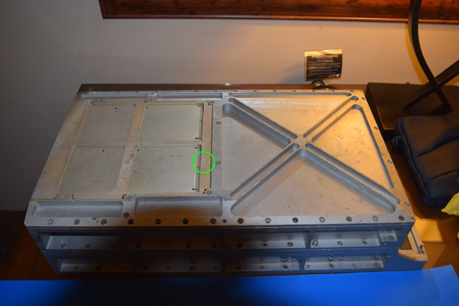 The restoration AGC |
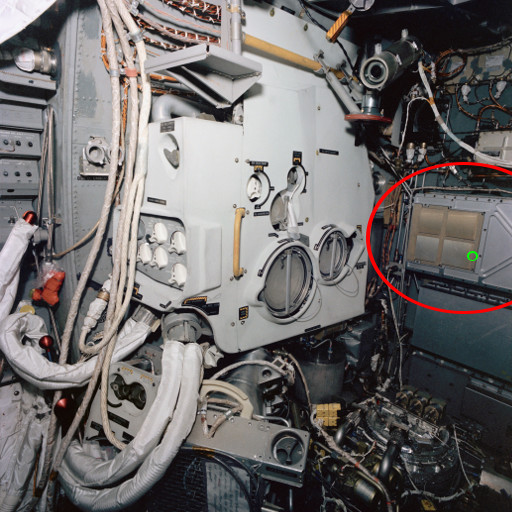 The interior of LTA-8 just before thermal tests. The red oval indicates the where the AGC is mounted. (Not taken by Mike Stewart, obviously!) |
Like any physical object, the restoration AGC has various
discolorations, scratches, and so on ... "distinguishing marks",
which should tell us if the photos above match each other.
Of course, the restoration AGC is now 50 years older than it was
in the LTA-8, and we know that it has not been treated as
a national treasure in the meantime, so it's going to have a lot
more distinguishing marks than it used to. We'll just pick
one. The green circles in the photos above mark areas we're
going to zoom in on in the enlarged photos below. Look for
the triangular-shaped silvery area near the center of the
pictures.
| 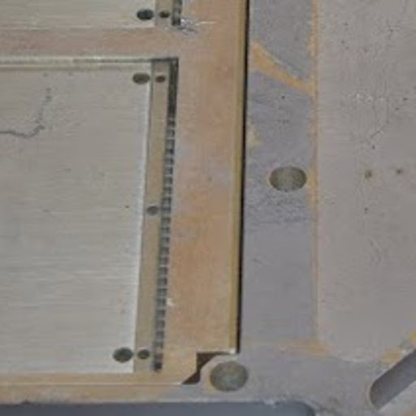 | 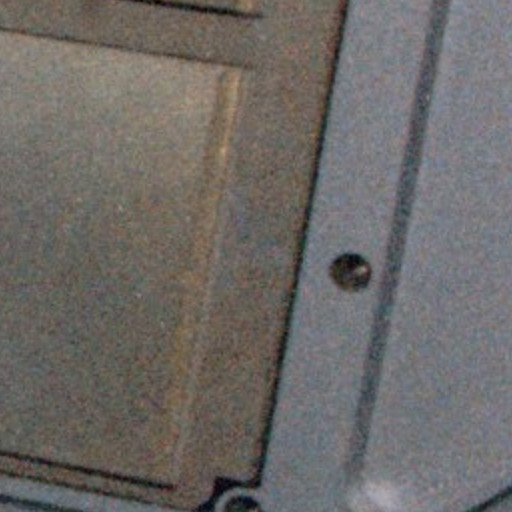 |
In case you still can't see it, here's the same thing below, but
outlined in green to draw your attention to the feature I'm
talking about.
|
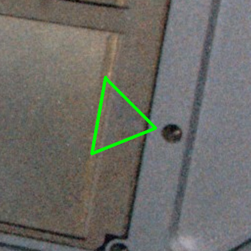 |
Which seems to confirm the team's thoughts: The restoration
AGC is indeed the AGC from LTA-8!
On the other hand .... it's very unlikely that this AGC was used
as-is in such vacuum testing. In any kind of official
testing, you typically want to use only devices whose
configurations are exactly as documented, so that the
entire testing configuration can be duplicated precisely later if
the tests need to be repeated for some reason or if problems are
discovered during testing. The restoration AGC, however, differs
in some significant ways from the documented configuration for AGC
p/n 2003100-071:
Incidentally, if that all sounded like gibberish to you, you
might find it valuable to look over my
explanation of the basic facts about the AGC's internal
structure before continuing.
In other respects, though, the AGC is exactly as we would
expect. Thus, a more accurate statement would be that this
AGC was originally used in LTA-8 vacuum testing, but that a number
of its circuit modules were subsequently swapped out and are no
longer original to the unit. That wouldn't be unusual, by
the way! Such repurposing happens all the time with
engineering units that have fulfilled their primary purpose and
have subsequently entered a second life as utility units. For
example, I'm told that the CURRENT SWITCH MODULE mentioned above
is one of a handful of modules in the AGC that had serious
internal failures; once upon a time, it seems that someone with a
broken AGC had raided the restoration AGC for its original working
modules, leaving behind the broken ones. Back in the day,
for engineering units that weren't going to be used on actual
missions, that would have been much more expeditious than
repairing the broken module. Repair is instead the
unfortunate task now left to the restorers. More on that
later.
In this case, though, it's downright convenient that some
of the circuit modules have been swapped, since it would have been
much harder for the restoration team to work with "potted" modules
than with the unpotted modules the unit now contains. In
fact, I wouldn't be surprised if the convenience factor hadn't
been part of the motivation the original Apollo engineers had in
swapping the modules in the first place!
By the way, as I mentioned above, LTA-8 used G&N system #602,
of which we have the engineering
drawings. Of course, those include the drawings for
AGC p/n 2003100-071, but I've also split out the engineering drawings for AGC
2003100-071 separately as a convenience.
Having the engineering drawings is how I knew, for example, that
the p/n of module B11 was wrong. Well ... that and the fact
that we also have photos of all the circuit modules in the
restoration AGC, so we know exactly which part numbers and
configurations they have, and thus can compare them to the
engineering drawings.
| 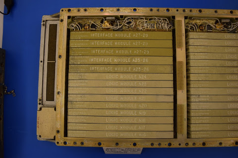 Left side of AGC Tray "A", containing circuit modules A16 through A29. (Click to enlarge.) |
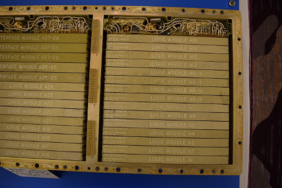 Right side of AGC Tray "A", containing circuit modules A1 through A15. (Click to enlarge.) |
| 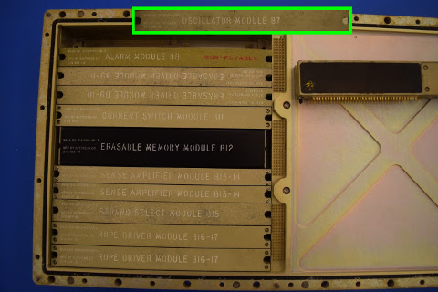 AGC Tray "B", containing circuit modules B7 through B17. Module B7 happened to have been unplugged when the photo was taken, so I've superimposed a separate photo of B7, outlined in green. (Click to enlarge.) |
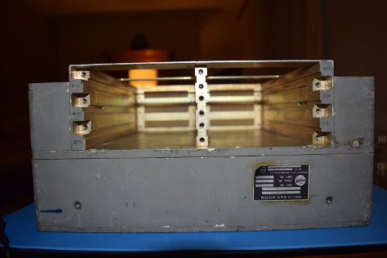 Bay for installation of 6 core-rope modules, B1 through B6. The thing to notice about it is that it's completely empty ... the AGC didn't have core rope modules in it. (Click to enlarge.) |
By "engineering drawings", of course, I mean the mechanical
drawings and the electrical schematics. Other pertinent
facts we can glean from the engineering drawings for G&N
system #602 are that it would have used DSKY model 2003985-081
(whose drawings are included in the G&N engineering
drawings) and that the AGC would have been loaded with the
AURORA 85 software if the core rope modules had been present when
Jimmie found the AGC. Actually, to be pedantic about it, the
engineering drawings tell us only that AURORA software having a
part number of 2021101-011 would have been installed, while Table
3-IJ of document ND-1021042 tells us additionally that:
Other corroborating evidence comes from MIT's final report.
Chapter 10.1.3 of the report covers system testing using
AURORA. It mentions only AURORA 85 (of which it says 5 sets
of rope modules were manufactured) and an improved revision,
AURORA 88 (of which it says 4 sets were manufactured). All
things considered, it seems as though the only revisions of AURORA
for which rope modules were manufactured were 85 and 88.
Alas, we have no copy of AURORA 85 software, nor of AURORA 88. But we have something pretty close, namely AURORA 12, and it can be run in the restoration AGC using the core rope simulator. If you're interested, you can view AURORA 12 in a variety of forms, including a pretty-printed transcription to source code, or even run it in our AGC simulation software. And have no fear, AURORA 12 is a software revision that would undoubtedly have functioned adequately in LTA-8. Not to mention that it's the only AURORA revision we have the actual source code for. A significant fact about AURORA is that it includes a full suite of self-test software ... the last AGC software version to do so, since in later versions the self-test was greatly curtailed in order to save precious memory. Thus AURORA was typically the software used during Project Apollo itself to check out the AGC.
Of course, the question of what software should have
been installed in the restoration AGC and what software actually
was installed in the AGC the last time it had rope modules
are two different questions!
As it turns out, we're pretty sure that some revision of AURORA
was indeed the last set of ropes installed, but which don't know
which AURORA revision other than that it was not AURORA
12. That's a pretty sweeping statement, considering that we
don't have the original rope modules! How could anybody know
for sure? Well, the conclusion comes from a clever forensic
analysis by the restoration team, which goes something like
this: The first thing to note is that the core ropes weren't
the only type of memory in the AGC. The core ropes,
by definition, are manufactured in such a way that they contain
fixed patterns of data — i.e., the program itself — which couldn't
be changed by the AGC itself. But the AGC also contained
erasable memory, which it could both write to and read from.
Different versions of the AGC software in the core ropes
inevitably ended up having different patterns of erasable memory
usage when the software ran, so if you knew exactly what to look
for in erasable memory, you could treat the patterns in erasable
memory as a kind of "fingerprint" to determine which program had
been stored in the core ropes the very last time the AGC had been
in operation. (Assuming of course that the erasable memory
module hadn't been swapped out from a different AGC in the
meantime!) Perhaps most importantly, the restoration team
stored the entire contents of the erasable memory module before
they did anything that could possibly change the contents of
memory, so they were in position to use this fingerprint
information!
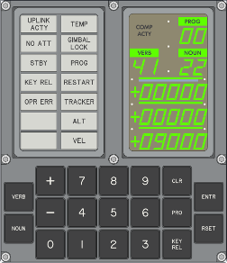The specific pattern in erasable memory that the
the team looked at is the so-called DSPTAB. It
doesn't really matter what DSPTAB is, for the purpose of
this explanation, but in case you're interested, it happens to to
be an 11-word table in which the
PINBALL GAME BUTTONS AND LIGHTS subprogram keeps
track of what is stored in all of the DSKY's internal relays, so
that it knows not to waste time writing to those relays if the
values haven't changed. The important thing to us at the
moment, though, is that of all the many AGC software versions we
know, only AURORA locates DSPTAB specifically at address
0307 (octal) in erasable memory. And since the contents of DSPTAB
are themselves DSKY-relay values, there should only be certain
recognizable patterns stored in it.
And indeed, that's what the team found: Stored at address
0307 in erasable memory was a set of relay patterns. The
image at right is a screenshot of a (simulated) DSKY into whose
relays the DSPTAB table is loaded. In other
words, what you see is the very last thing the DSKY displayed the
very last time the restoration AGC had been run back in the
1960's. A ghost of the past!
In fact, the forensic analysis of the contents of erasable memory
was much harder than I've made it sound, because as we'll see later, the erasable memory
module is actually broken ... a matter which gave the team a lot
of heartache before managing to work around the problem.
As for why it could not have been AURORA 12 — other than the fact
that we think no rope modules were ever made for AURORA 12 —, we
know this for sure because while DSPTAB is in the right
place in erasable memory, other data is slightly out of
place. Specifically, something called the "phase table" is
one word higher in memory than it ought to be for AURORA 12.
Finally, one fun tidbit about the erasable memory is that Nik
Beug (not a restoration team member) had the opportunity to dig
through the dump of the erasable-memory module, and found that one
of the erasable-memory locations, LATITUDE, decoded to
29.553223°N±0.02°. The value should correspond to the last
place the AGC had been run, assuming it had a functioning Inertial
Measurement Unit (IMU). The latitude of Johnson Space
Center, according to Google Maps, is 29.559560°N.
Unfortunately, the ±0.02° uncertainty (due to LATITUDE
being stored as a single-precision floating-point number rather
than a double-precision one) is too large to allow pinpointing the
exact building. 
By the way, all the talk above about AURORA isn't meant to imply
that AURORA is the only software the restoration AGC can
run. In fact, it should be capable of running essentially
any of the Block II AGC software we have on our LUMINARY or COLOSSUS
pages. Actually, the team has told me that, in fact, they
had tested every AGC software version we have, and that all of
them did run fine on the restoration AGC.
The restoration team has made an ongoing series of videos about
their activity, thus gaining a measure of recognition both in the
online and real worlds. As I'm writing this, they are on
video part 11, and there will undoubtedly be more parts in the
future. Here is part 1:
Here are also some online articles about the restoration:

If you're managed to get this far, you're probably truly
interested in the technical nitty-gritty. I might suggest
reading farther on Carl
Claunch's blog.
TBD
TBD
What the team found as they proceeded was that things were not
entirely rosy ... a little rosy, indeed pretty
rosy, but not perfectly so. Most of the circuitry still
worked! But not all of it, particularly among those modules
that had been replaced, presumably after LTA-8
testing. As I mentioned earlier, one reason that circuit
modules may have been swapped afterward is that after its primary
function (LTA-8 testing) had finished up, the AGC itself became a
resource: It could be used as a source of spare parts.
So if you were an engineer working with a different AGC and
something on it broke, no problem! Just replace the broken
module with a good (though likely older-model) one from the LTA-8
AGC! As long as the AGC you were working with didn't end up
in an actual mission, the fact that it had an obsolete (but
functional!) circuit module or two was of no consequence to
you. The unpleasant side-effect, of course, is that you end
up with broken circuit modules in the restoration AGC.
The team basically encountered only a few problems as they
followed this path, and one of those had nothing to do with actual
circuit breakage.
| 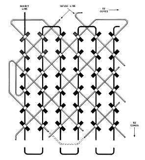 Erasable memory as it's supposed to be. (Click to enlarge.) |
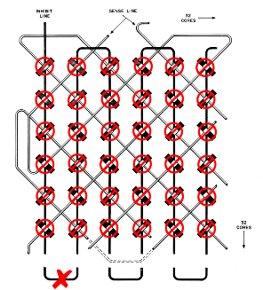 Erasable memory with a broken INHIBIT line. (Click to enlarge.) |
| 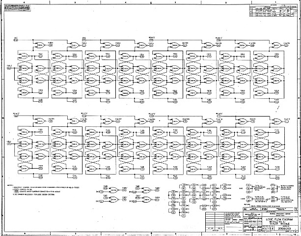 Scaler module A1 electrical schematic, top side. (Click to enlarge.) |
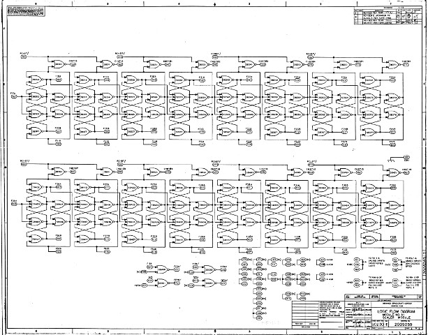 Scaler module A1 electrical schematic, bottom side. (Click to enlarge.) |
TBD
Which finally brings us to the elephant in the room, the problem
that seems to have caused the most frustration for the longest
period of time: The dreaded broken erasable-memory module,
B12!
Though not a part of the restoration team, I can feel the
frustration myself. For one thing, while you can't actually
do much with the AGC without a working erasable memory — after
all, software's raison d'être is basically to manipulate
the contents of memory, so if you can't do that, what can you do?
— you nevertheless can do enough to convince
yourself that the AGC would be almost completely operational if
only the memory were there. Like Moses gazing across the
River Jordan, you can see the Promised Land, but can't actually go
there! You see, internally to the AGC, even getting the
point where the first program instruction would be executed is a
very complex operation that the AGC can execute flawlessly without
memory, and which exercises almost every part of the CPU's
circuitry. You can even execute the first few instructions,
and can demonstrate that they work correctly other than their
affect on the broken 16th memory bit.
Another frustrating part is that the erasable-memory module is
one of the few potted modules, so that even if you can
determine more-or-less where the broken wire is, you can't get to
it to repair the break! That's not just because it's a
collector's item and you don't want to rip it apart, but also
because you cannot physically remove the potting material without
destroying the circuit.
At first, the team had the idea that if they could determine precisely
where the INHIBIT wire was broken, then perhaps they
could drill a small hole in the potting material to get access to
it, and then perform some kind of microsurgery through the tiny
hole to fix it. (This is the point where I had my sole
involvement, in digging up the mechanical drawings for the
physical configuration of the module, the specs for the potting
material and so on.) Rather than relying on my lame
descriptions, I'd recommend actually watching the team's video of
their attempt to find the break, and why they concluded that the
microsurgery idea couldn't work.
So, if you've followed the explanations above, you realize that
Jimmie Loocke and the restoration team now have a basically
restored AGC that is actually functioning, even though it has no
core-rope modules of its own. What else can you do with it?
You can do some trading! Or in the parlance of the day, you
can negotiate a deal.
Huh? What kind of deal? Well, for one thing, if
you've paid any attention at all to the things you've seen on this
website, you'll have realized that I'm mainly interested in
preserving the software of the AGC for future generations
and for the academic interest of understanding how the AGC
software evolved over time. But getting AGC software is a
tough proposition, since it usually depends on people who have
such stuff stepping forward and giving it to you. There
aren't that many people who can (or sometimes, sadly, who will)
do that. But wait, is there any way this nifty, now-restored
AGC can somehow be exploited to get some AGC software for us?
It turns out that there is! How effective it will be over
the course of time I don't know, but it works something like
this: There are various museums and even private collectors
who have AGCs. While those AGCs probably wouldn't function
if powered up, some of them may have core-rope modules in
them. And if you visit a museum/collector, taking along your
own now-functioning AGC, perhaps the museum/collector let you temporarily
install their own rope modules in your AGC, so perhaps you can
read the contents of those modules ... i.e., perhaps you can get
copies of the software the AGCs belonging to those museums or
collectors contain.
The fruits of that kind of wheeling-and-detailing (none of it by
me, of course, since I'm not a participant in the
restoration) are covered in the subsections below.
The AGC itself uses this information merely to detect if there
has been memory corruption: If any single data bit
in a word has been corrupted, so that it has flipped from 0 to 1
or vice-versa, then the parity bit is wrong; the AGC can detect
the wrong parity bit. If two bits in a word have flipped,
then the parity doesn't change and the error can't be detected ...
but that's a much lower probability event, so the parity bit
provides pretty reliable detection of errors in most cases.
In our case, though, we can use the parity bit to actually fix
the broken memory bits! I mean, we can fix them in the data
file dumped from the core rope, and not in the physical core rope
itself.
How so? Well, in the case of the data read from the
Computer History Museum's core-ropes, we know that only a single
bit in some words is bad, and we know which bit it is, as
well. So all we need to do is to set those known-bad bits
(bit 14 in bank 0 or bit 3 in bank 4) in such a way as to make the
total number of 1-bits in each word odd. Simple! (Or
at least, simple for a computer!  ) If two of the bits in any of the
words had been bad, we couldn't fix them this way (or at all!),
but with just one bad bit per word it works out perfectly.
) If two of the bits in any of the
words had been bad, we couldn't fix them this way (or at all!),
but with just one bad bit per word it works out perfectly.
Even so, that's not enough to give us confidence in the
data. For example, what about the fact that a random bit
here or there might have been corrupted sitting around the last 50
years or so? Those errors would normally be detected by
parity errors! Well, we can still use parity checking for
all of the core memory not affected by the systematic
errors. I mean, parity checking in all of the other memory
banks (other than banks 0 and 4) or in the 2nd halves of banks 0
and 4 is still just as useful as ever.
Another feature that would normally give us confidence is bank
checksums: In most AGC programs, each memory bank is
accompanied by a checksum word (basically the sum of all of the
other words in the bank), so if the checksum isn't consistent with
the other words in the bank, it's an easy way to detect
errors. Unfortunately, RETREAD is such an early program that
it didn't yet use bank checksums. So that's a
double-checking method that simply isn't available to us.
Another method of providing confidence of the data dumped from
the core ropes is to see if meaningful software source code can be
created for it. After all, the data dumped from the ropes is
just a series of numbers, the so-called "assembled" form of the
software source code. As such, it's nice to have and can be
used to run the program, but it's not really usefully
human-readable. Only the source code is readable, even even
if you need to be one of the illuminati to do so, so we really
want source code. One thing that assists in attempting to
come up with such source code is that RETREAD 50 is obviously
going to be very similar to RETREAD 44, for which we
already have the source code.
Indeed, the restoration team has gone through exactly this
exercise, by modifying RETREAD 44's source code as necessary to
get source code for RETREAD 50 than can, in turn, be assembled to
get precisely the (repaired) data dumped from the core
ropes. Not only that, I've been given a concise executive
summary of the differences between the two:
This RETREAD 50 code has been added on our LUMINARY page and in our
GitHub software repository for your delectation.

{kind=link}
{kind=link}
{kind=link}
{kind=link}
{kind=link}
{kind=link}
{kind=link}
{kind=link}
{kind=link}
{kind=link}